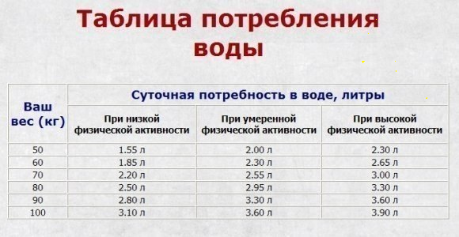

Щодня випивайте літр води: користь для організму
Ми часто чуємо про «норму води в 2 літри», але для багатьох це здається недосяжним ідеалом. Насправді навіть звичка випивати один додатковий літр чистої води на день може радикально змінити ваше самопочуття, зовнішній вигляд і рівень енергії.
Що відбувається з тілом, коли ви п'єте достатньо води?
Вода бере участь у кожній хімічній реакції нашого організму. Додавання одного літра чистої H2O до щоденного раціону запускає такі процеси:
- Пробудження метаболізму. Вода пришвидшує обмін речовин. Коли організм зволожений, він ефективніше спалює калорії та виводить продукти розпаду з тканин.
- Природний детокс. Нирки працюють ефективніше, швидше фільтруючи кров і виводячи токсини. Це безпосередньо відображається на стані шкіри: зникають набряки та запалення.
- Покращення когнітивних функцій. Мозок надзвичайно чутливий до дефіциту води. Зайвий літр чистої води на день допомагає позбутися «туману в голові», покращує пам'ять і концентрацію.
- Підтримка суглобів. Хрящі та суглобова рідина здебільшого складаються з води. Достатнє зволоження знижує тертя в суглобах і зменшує ризик травм.
Чому важливо, щоб цей літр був очищеним?
Якщо ви п'єте воду з-під крана, ви разом з рідиною отримуєте хлор, солі твердості та можливі мікродомішки. Це створює додаткове навантаження на печінку та нирки.
Очищена вода Crystal Water дає інший ефект:
- Вона легше засвоюється клітинами завдяки правильній структурі після зворотного осмосу.
- Вона не створює «кам'яного осаду» в нирках.
- Вона не дратує слизову оболонку шлунка хімікатами.
Як легко впровадити цю звичку?
- Склянка води натщесерце. Почніть ранок із 200-300 мл води. Це «запустить» ваш організм.
Інвестуйте у своє здоров'я найпростішим способом
Один літр чистої води на день — це маленька зміна, яка дає величезний результат. Замовте доставку еталонно чистої води в Бровари та Київ від Crystal Water.
Замовити воду для здоров'я